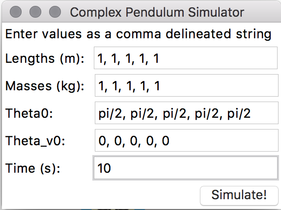
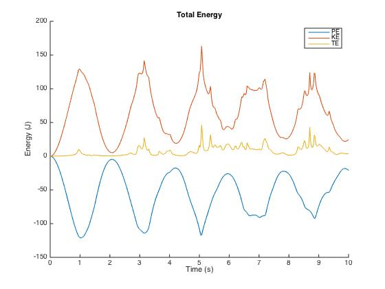
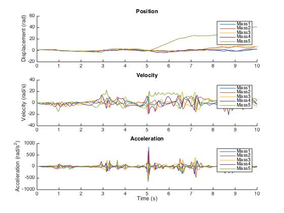

Portfolio.Pendulum
| < | LIST |
> |
 download source code
download final report
> ./stats
Status: Completed Dec/2015
Languages: Matlab, Python
Software: Matlab, Tkinter
Hardware: n/a
Documentation: Complete -- Verbose Debrief
> ./documentation
download source code
download final report
> ./stats
Status: Completed Dec/2015
Languages: Matlab, Python
Software: Matlab, Tkinter
Hardware: n/a
Documentation: Complete -- Verbose Debrief
> ./documentation
Pictured above is an example output of our N-case compound pendulum simulator. Below is a screen capture of the GUI used to generate that output.

The GUI is written in Tkinter, where the user inputs are passed into a Python script that generates the Matlab script for the pendulum motion. We tried to write the entire simulator in Matlab, but on the fly matrix generation for the pendulums took an eternity when done in Matlab and seconds in Python. Please take a look at the verbose debrief for a more in depth explanation of how we generalized the equations of motion for ccompound pendulums.
After running the output Matlab script in Matlab, the code also generates energy and position/velocity/acceleration plots.
Energy:

This graph says that kinetic energy(KE) added to potential energy(PE) results in a mostly flat total energy(TE). This graph is proof that our code is functioning as expected, because energy is conserved in the system. There are bumps in the total energy line, but this is due to calculation errors in the ODE45 function that Matlab is running.
Position/Velocity/Acceleration:

Here we see how each additional pendulum link experiances more displacement than the ones before it, which makes sense given that the motion of the last link of the pendulum is dependant on the motion of all the other links before it. We find that acceleration in all the pendulums seem to follow a similar pattern, because all of the pendulums are linked.
>
|